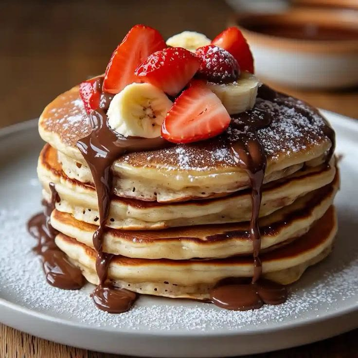

Producto de estación
Trabajamos con proveedores locales y ajustamos la carta según lo que la tierra da en cada momento del año.

"Raíz Noble empezó como una idea simple: cocinar lo que nosotros mismos querríamos comer, con el mismo cuidado con el que se cocina para la propia familia."— Equipo fundador, Raíz Noble
La idea de Raíz Noble nació de una pregunta simple: ¿qué pasaría si un restaurante tratara cada plato con el mismo cuidado que una comida familiar? De ahí el nombre — porque todo lo que servimos parte de una raíz: un producto de estación, una receta que se repite generación tras generación, un fuego que no se apura.
Hoy elegimos nuestros cortes, amasamos nuestras pastas y horneamos nuestras pizzas todos los días, de la misma forma en que lo hicimos desde el primer día: sin atajos, con tiempo, y pensando siempre en la mesa que se sienta del otro lado.
Nuestros valores
Trabajamos con proveedores locales y ajustamos la carta según lo que la tierra da en cada momento del año.
La parrilla y el horno de barro marcan el ritmo de la cocina: cada corte y cada masa se cocinan a su tiempo, no al nuestro.
Pensamos los platos para el medio de la mesa: para picotear, repetir y quedarse charlando después del postre.
El equipo
Nuestro equipo de cocina trabaja a la vista, condimentando cada plato en el momento. Creemos que ver cómo se prepara la comida es parte de la experiencia — por eso la cocina nunca está completamente cerrada al salón.
Si tenés alguna preferencia, alergia o simplemente ganas de charlar sobre algún plato, cualquiera de nuestros cocineros va a estar encantado de contarte cómo lo preparamos.

Galería



Reservá tu mesa y vení a probar por qué cada plato en Raíz Noble parte de una raíz.
Reservar mesa